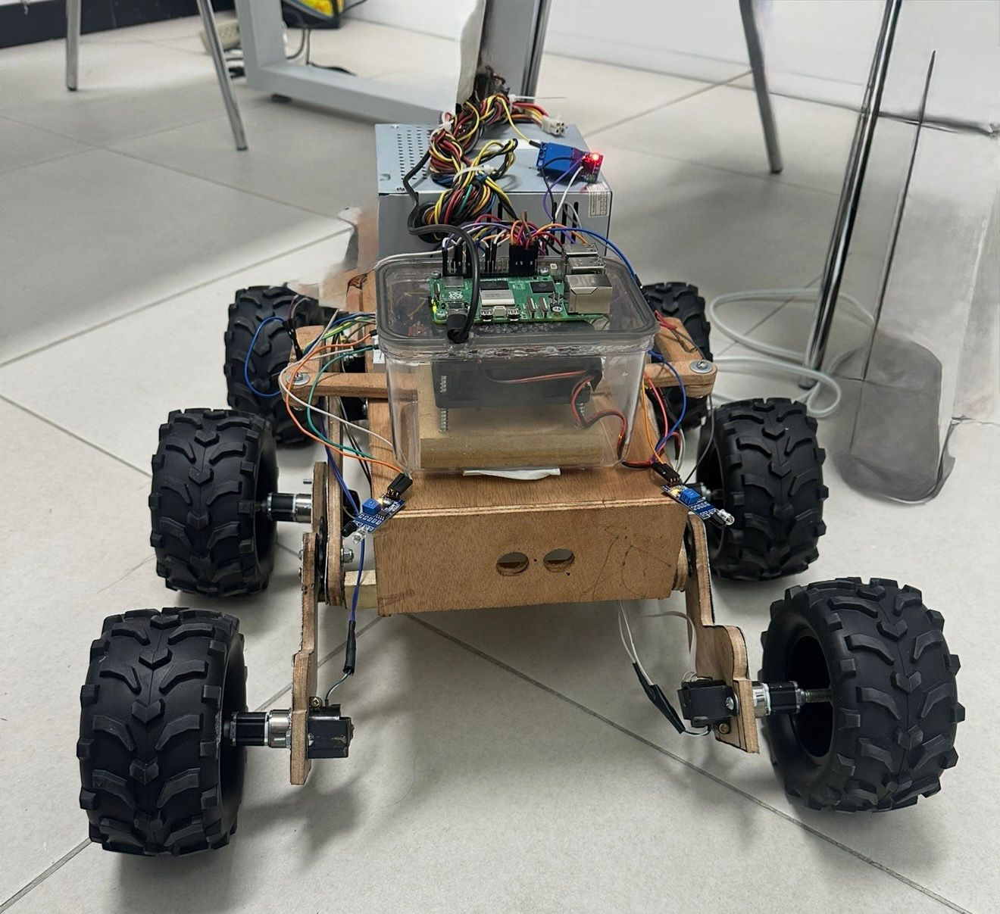
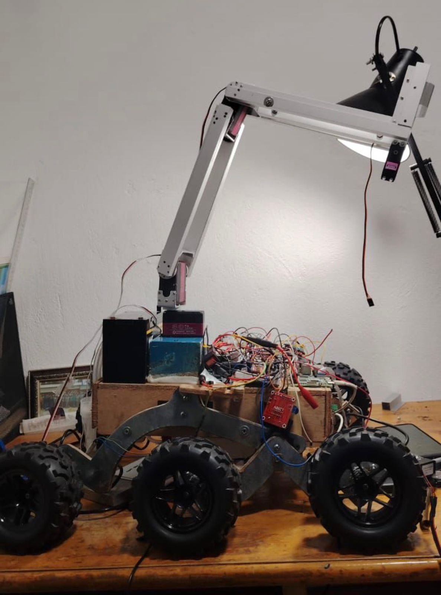
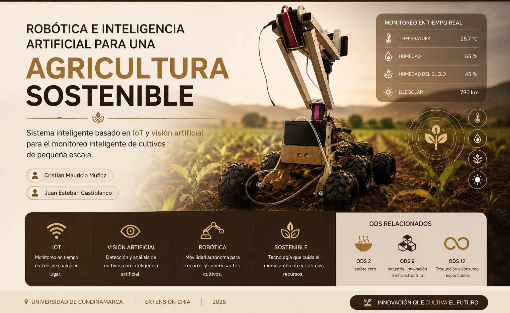

GALERÍA DEL PROYECTO




El sector agrícola enfrenta dificultades relacionadas
con el monitoreo constante de cultivos y la detección
temprana de problemas ambientales que afectan la producción.
Muchos procesos continúan realizándose manualmente,
limitando la eficiencia y aumentando el desperdicio
de recursos como agua y fertilizantes.
SmartAgriculture propone una solución tecnológica basada
en IoT, sensores inteligentes y visión artificial
para automatizar el monitoreo agrícola y optimizar
la toma de decisiones en cultivos de pequeña escala.
Evaluar el desempeño del prototipo SmartRovert e implementar mejoras tecnológicas basadas en IoT y visión artificial para optimizar el monitoreo agrícola inteligente.
Sensores inteligentes conectados mediante ESP32 y Raspberry Pi para monitoreo remoto.
Plataforma móvil autónoma diseñada para desplazarse en terrenos agrícolas.
Sistema de cámaras y procesamiento de imágenes para análisis del cultivo.
Relación entre problema, pregunta, objetivos, hipótesis y variables del proyecto.
Organización de variables, dimensiones, indicadores e instrumentos del estudio.
Desarrollo metodológico completo: análisis de involucrados, árboles, EAP y resumen narrativo.
Ver secciónPresentación final del proyecto utilizada en la feria de innovación.
Documento completo correspondiente al desarrollo de la Matriz de Marco Lógico del proyecto SmartRovert, incluyendo los 9 pasos metodológicos, diagramas, indicadores, medios de verificación y supuestos.

